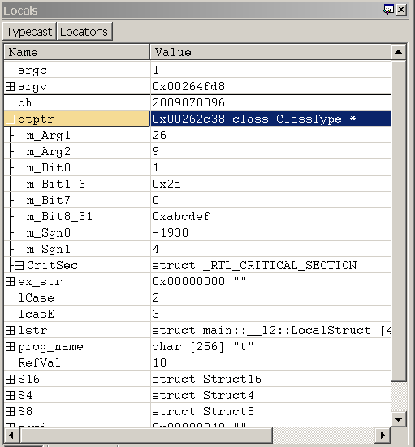

In WinDbg, you can view local variables by entering commands, by using the Locals window, or by using the Watch window.
Debugger Command Window
You can view local variables and parameters by entering the dv command or the dt command in the Debugger Command window.
Opening the Locals Window
The Locals window displays information about all of the local variables in the current scope.
To open or switch to the Locals window, in the WinDbg window, on the View menu, click Locals. (You can also press ALT+3 or click the Locals button ( ) on the toolbar. ALT+SHIFT+3 closes the Locals window.)
) on the toolbar. ALT+SHIFT+3 closes the Locals window.)
The following screen shot shows an example of a Locals window.

The Locals window can contain four columns. The Name and Value columns are always displayed, and the Type and Location columns are optional. To display the Type and Location columns, click the Typecast and Locations buttons, respectively, on the toolbar.
Using the Locals Window
In the Locals window, you can do the following:
-
The Name column displays the name of each local variable. If a variable is a data structure, a check box appears next to its name. To expand or collapse the display of structure members, select or clear the check box.
-
The Value column displays the current value of each variable.
- To enter a new value for the variable, double-click the current value and type the new value, or edit the old value. (The cut, copy, and paste commands are available to use for editing.) You can type any C++ expression.
- To save the new value, press ENTER.
- To discard the new value, press ESC.
- If you type an invalid value, the old value will reappear when you press ENTER.
Integers of type int are displayed as decimal values; integers of type UINT are displayed in the current radix. To change the current radix, use the n (Set Number Base) command in the Debugger Command window.
-
The Type column (if it is displayed in the Locals window) shows the current data type of each variable. Each variable is displayed in the format that is proper for its own data type. Data structures have their type names in the Type column. Other variable types display "Enter new type" in this column.
If you double-click "Enter new type", you can cast the type by entering a new data type. This cast alters the current display of this variable only in the Locals window; it does not change anything in the debugger or on the target computer. Moreover, if you enter a new value in the Value column, the text you enter will be parsed based on the actual type of the symbol, rather than any new type you may have entered in the Type column. If you close and reopen the Locals window, you will lose the data type changes.
You can also enter an extension command in the Type column. The debugger will pass the address of the symbol to this extension, and will display the resulting output in a series of collapsible rows beneath the current row. For example, if the symbol in this row is a valid address for a thread environment block, you can enter !teb in the Type column to run the !teb extension on this symbol's address.
-
The Location column (if it is displayed in the Locals window) shows the offset of each member of a data structure.
-
If a local variable is an instance of a class that contains Vtables, the Name column displays the Vtables, and you can expand the Vtables to show the function pointers. If a Vtable is contained in a base class that points to a derived implementation, the notation _vtcast_Class is displayed to indicate the members that are being added because of the derived class. These members expand like the derived class type.
-
The local context determines which set of local variables will be displayed in the Locals window. When the local context changes for any reason, the Locals window is automatically updated. By default, the local context matches the current position of the program counter. For more information about how to change the local context, see Local Context.
The Locals window has a toolbar that contains two buttons (Typecast and Locations) and a shortcut menu with additional commands. To access the menu, right-click the title bar of the window or click the icon near the upper-right corner of the window (). The toolbar and menu contain the following buttons and commands:
-
(Toolbar and menu) Typecast turns the display of the Type column on and off.
-
(Toolbar and menu) Locations turns the display of the Location column on and off.
-
(Menu only) Display 16-bit values as Unicode displays Unicode strings in this window. This command turns on and off a global setting that affects the Locals window, the Watch window, and debugger command output. This command is equivalent to using the .enable_unicode (Enable Unicode Display) command.
-
(Menu only) Always display numbers in default radix causes integers to be displayed in the default radix instead of displaying them in decimal format. This command turns on and off a global setting that affects the Locals window, the Watch window, and debugger command output. This command is equivalent to using the .force_radix_output (Use Radix for Integers) command.
Note The Always display numbers in default radix command does not affect long integers. Long integers are displayed in decimal format unless the .enable_long_status (Enable Long Integer Display) command is set. The .enable_long_status command affects the display in the Locals window, the Watch window, and in debugger command output; there is no equivalent for this command in the menu in the Locals window. -
(Menu only) Open memory window for selected value opens a new docked Memory window that displays memory starting at the address of the selected expression.
-
(Menu only) Invoke dt for selected memory value runs the dt (Display Type) command with the selected symbol as its parameter. The result appears in the Debugger Command window. The -n option is automatically used to differentiate the symbol from a hexadecimal address. No other options are used. Note that the content that is produced by using this menu selection is identical to the content produced when running the dt command from the command line, but the format is slightly different.
-
(Menu only) Toolbar turns the toolbar on and off.
-
(Menu only) Dock or Undock causes the window to enter or leave the docked state.
-
(Menu only) Move to new dock closes the Locals window and opens it in a new dock.
-
(Menu only) Set as tab-dock target for window type is unavailable for the Locals window. This option is only available for Source or Memory windows.
-
(Menu only) Always floating causes the window to remain undocked even if it is dragged to a docking location.
-
(Menu only) Move with frame causes the window to move when the WinDbg frame is moved, even if the window is undocked. For more information about docked, tabbed, and floating windows, see Positioning the Windows.
-
(Menu only) Help opens this topic in the Debugging Tools for Windows documentation.
-
(Menu only) Close closes this window.
The Watch Window
In WinDbg, you can use the Watch window to display and change local variables. The Watch window can display any list of variables that you want. These variables can include global variables and local variables from any function. At any time, the Watch window displays the values of those variables that match the current function's scope. You can also change the values of these variables through the Watch window.
Unlike the Locals window, the Watch window is not affected by changes to the local context. Only those variables that are defined in the scope of the current program counter can have their values displayed or modified.
To open the Watch window, choose Watch from the View menu. You can also press ALT+2 or click the Watch button on the toolbar:  . ALT+SHIFT+2 closes the Watch window.
. ALT+SHIFT+2 closes the Watch window.
The following screen shot shows an example of a Watch window.

The Watch window can contain four columns. The Name and Value columns are always displayed, and the Type and Location columns are optional. To display the Type and Location columns, click the Typecast and Locations buttons, respectively, on the toolbar.
Additional Information
For more information about controlling local variables, an overview of using variables and changing the scope, and a description of other memory-related commands, see Reading and Writing Memory.